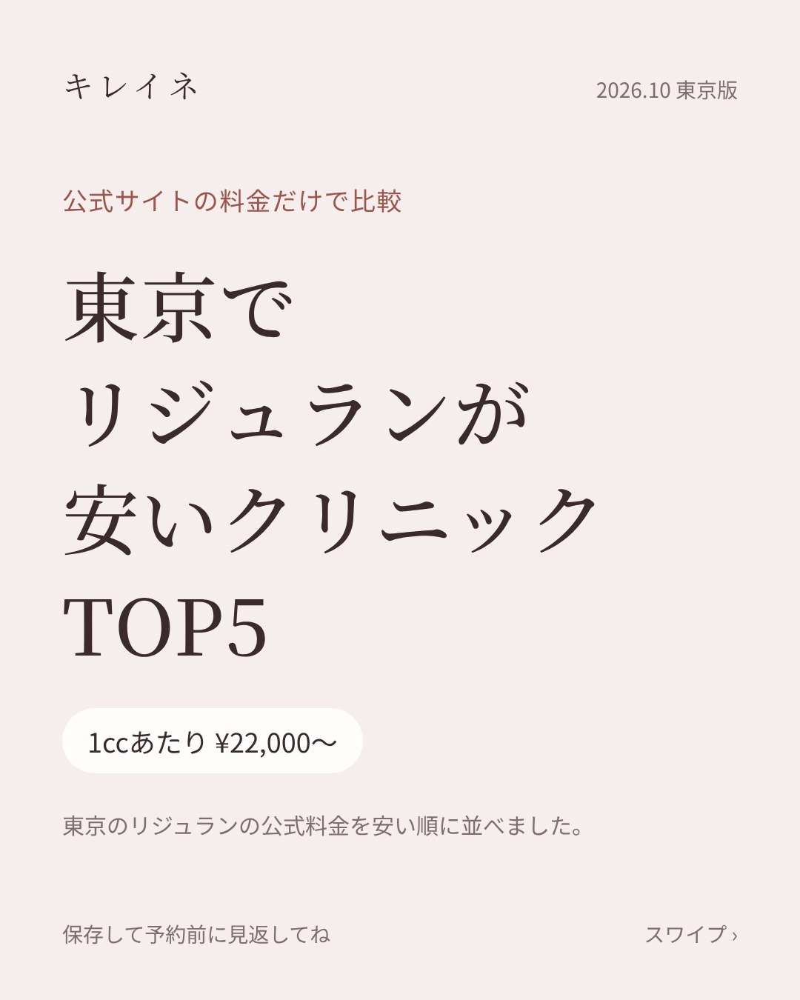
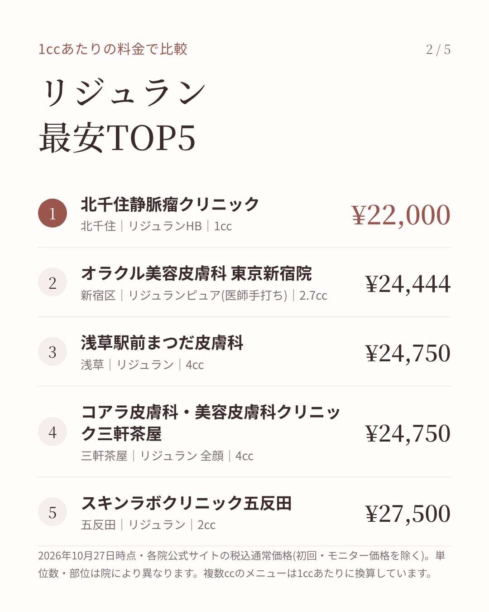
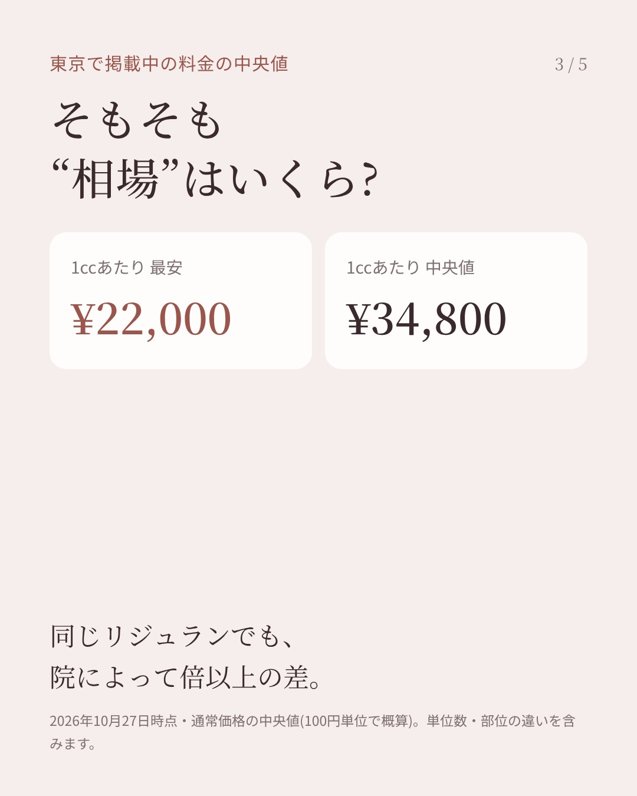
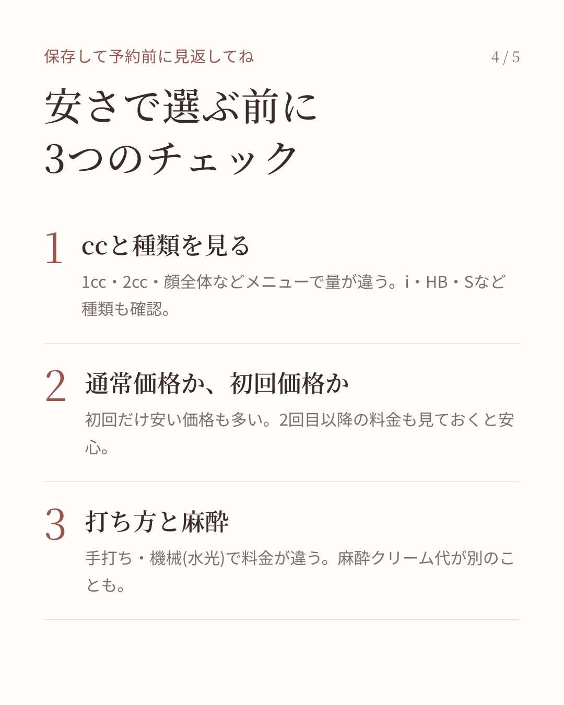
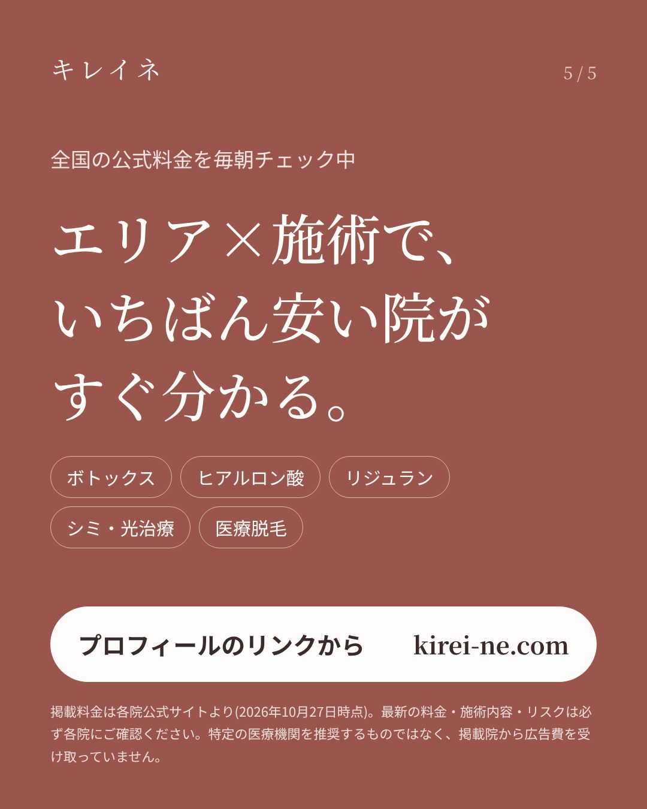
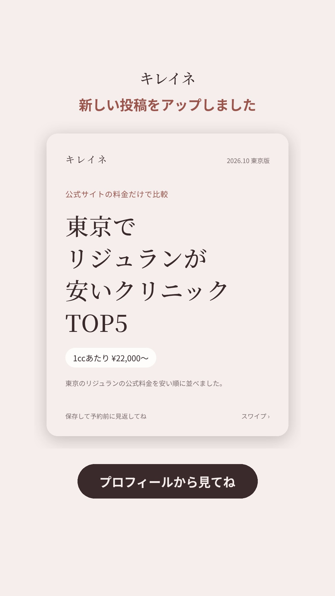

画像を長押し →「写真に保存」(01から順に)
リジュランの料金って、2ccとか2.7ccとかメニューの量がバラバラで、比べにくくないですか？ なので東京の院を全部「1ccあたり」に直して並べてみました。 いちばん安いところで1ccあたり22,000円、真ん中は35,000円くらい。 スワイプすると安い順のTOP5と、予約前に見ておきたいことをまとめてます。 手打ちか機械か、麻酔代が別かでも合計が変わるので、そこもチェックしてね。 ※10/27時点・各院公式サイトの税込通常価格。最新は各院へ。 #リジュラン #肌育注射 #美容医療 #美容皮膚科 #東京美容